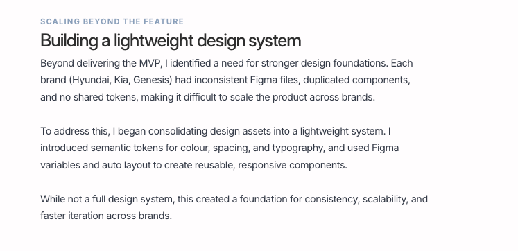

Hyundai
Finance.
Enabling car dealers to do soft credit checks — so they could see indicative affordability early in the conversation, without slowing the showroom down or jumping through tools that weren’t built for that moment.
I led the design and delivery of a dealer-led soft search MVP — from discovery through to pilot launch — to help dealers save time and improve customer conversion on car finance.

Put a compliant soft search in dealers’ hands at the right point in the sale — fast enough for the forecourt, clear enough that customers know what’s happening.
Hyundai Capital UK (HCUK), Santander Consumer UK (SCUK), and the eApply ecosystem.
Dealers were spending significant time preparing quotes for customers who were later rejected. At the same time, the system landscape was fragmented — multiple tools and duplicated workflows.
This created:
- Missed sales opportunities due to hesitant customers
- Time lost on applications that wouldn’t convert
- Manual re-entry of data across systems
The challenge wasn’t only designing a feature — it was creating a flow that reduced friction while fitting into a complex, multi-system ecosystem across HCUK, SCUK, and the wider eApply landscape.
That framing is what made the dealer-led soft search work matter: early signal on finance, without adding yet another disconnected step.
Discovery through MVP launch.
The programme moved in stages — each step grounded in what dealers told us, then validated in prototype form before we hardened patterns into the design system for launch.
Discovery & research
Workshops and conversations with dealers and stakeholders to learn when a soft search should surface, what “good” looks like on screen, and where people dropped off today.
Responsive prototype
End-to-end flows tested on realistic devices — dealers aren’t always at a desk, and clarity on a smaller screen mattered as much as desktop.
Design system
Repeatable components and patterns so engineering could ship consistently — and so future finance journeys wouldn’t reinvent the wheel.
MVP launch
A pilot-ready MVP tied to a live rollout plan — narrowing scope to what dealers needed first, then iterating after real usage.
Built around trust, clarity and speed.
Soft search sits in a sensitive space: customers need to understand what’s being checked and why; dealers need confidence they’re not mis-selling. The UI prioritised plain language, obvious consent, and outcomes dealers could act on in the moment — not jargon buried in modal stacks.
Building a lightweight design system
Beyond delivering the MVP, I identified a need for stronger design foundations. Each brand (Hyundai, Kia, Genesis) had inconsistent Figma files, duplicated components, and no shared tokens, making it difficult to scale the product across brands.
To address this, I began consolidating design assets into a lightweight system. I introduced semantic tokens for colour, spacing, and typography, and used Figma variables and auto layout to create reusable, responsive components.
While not a full design system, this created a foundation for consistency, scalability, and faster iteration across brands.

The same hierarchy as on the live case study — overline, headline, and narrative on consolidating libraries across brands.

Soft search across Hyundai, Kia, and Genesis — with design system work packaged alongside research and responsive delivery on the program card.
When dealers took the wheel.
I tested early concepts with dealers, uncovering key issues:
- Results felt too harsh — risk of embarrassing customers
- Messaging was unclear — results misinterpreted
- System feedback lacked transparency — reduced trust
Those insights pushed the design past binary pass/fail screens toward guided, contextual decision-making — still honest about outcomes, but kinder and clearer to use on the forecourt.
Scroll sideways
Results too harsh
Strong colours for high scores landed well — but low scores felt brutal. Dealers worried about embarrassing customers in front of them.
Copy missed
Dealers weren’t clocking that outcomes were indicative — the caveat had to be visible in the scan pattern, not footer-smallprint.
System feedback unclear
When retrieval failed, the message sounded like user error. Dealers weren’t sure whether to retry, fix data, or escalate — trust dipped.
Mixed views on sharing
Feedback split on showing customers results on the spot. For MVP we kept control with dealers — and flagged share UX as a follow-on decision.
“We don’t want to embarrass the customer — particularly if we’re presenting this in the showroom. Showing someone a low score could make them walk out and be embarrassed.”
A dealer-led soft search MVP — flows and patterns tuned for real showroom use.
A guided path for dealers to start the check at the right time — with consent and expectations spelled out in human language.
Presenting results so dealers could move the finance conversation forward confidently — without forcing customers into dead ends.
What I shipped.
- Designed and shipped the soft search MVP
- Delivered live, responsive designs across web, tablet, and mobile
- Branded for three OEMs: Genesis, Hyundai, and Kia
- Finance compliance sign-off to meet regulatory requirements
- Set direction for future phases beyond MVP
- Developed a lightweight design system to enable speed
This case study focuses on the soft search MVP — one slice of broader HCUK work — happy to walk through flows or governance detail in conversation.